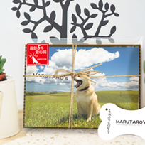
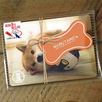

最新消息
4年前，日本311大地震引發驚人海嘯，瞬間抹去福島縣等地區沿海土地，導致核電廠輻射外洩，當地居民一瞬間失去生命財產，其畫面震驚全球，也讓無數日本人民心碎。
「該如何重振大家的精神，不再消沈呢？」居住在神奈川縣的小野慎二郎先生，決定將柴犬MARU的呆萌照片登上照片分享網站Instagram，希望能夠發揮MARU的療癒之力，鼓勵災民們重新站起來。短短數年，已有上百萬人關注，不只是來自日本的支持，更有許多台灣民眾也被MARU療癒了呢！
台灣在311震災發生時，第一時間向鄰居日本伸出援手，並募集了龐大金額的捐款，台日友好情誼的展現，讓小野慎二郎先生深受感動。他希望能夠做點事情來感謝台灣民眾對日本311大地震的援助，於是成立了柴犬MARU中文官方網站，讓台灣人也能時常看到牠活潑又可愛的生活記趣，同時精選製作了幾項週邊小物，將捐出部份銷售盈餘予公益團體。
今日起至3月底(3/31)為止，舉辦為期21天的網路義賣活動，指定商品「柴犬MARU感謝你的愛 - 義賣限定版明信片組」義賣所得盈餘將全數捐贈「台灣導盲犬協會」，協助台灣導盲犬協會能培訓出更多幫助盲胞的導盲犬。網站販售其他MARU週邊產品所得，也將固定捐出部分利潤，持續回饋臺灣社會，希望透過MARU的力量幫助動物，為台灣的狗狗們盡一份心力，也邀請你一起共襄盛舉！
線上購物



